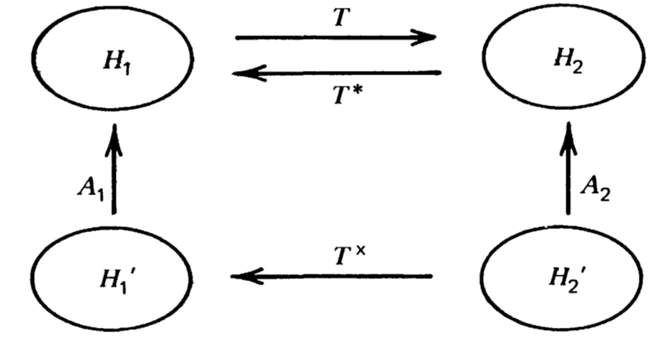

Chapter 4: Foundamental theorems#
“Do the difficult things while they are easy and do the great things while they are small. A journey of a thousand miles must begin with a single step.”
—Lao Tzu
Axiom of choice
For any nonempty set \(X\), there exists a choice function \(c:\mathscr{P}(X)\rightarrow X\) from the power set \(\mathscr{P}(X)\) to the set \(X\) that maps each set of \(X\) to an element of \(X\).
Theorem 12 (Zorn’s lemma)
If every chain (totally ordered sets) of a partially order set \(X\) has an upper bound, then \(X\) has at least one maximum element.
Every vector space \(X\ne\{0\}\) has a Hamel basis, a linearly independent subset of \(X\) which spans \(X\)
In every Hilbert space \(\mathbb{H}\ne\{0\}\) there exists a total orthonormal set
Definition 57 (subadditive)
A real-valued functional \(p\) on a vector space \(X\) is subadditive if \(p(x+y)\le p(x)+p(y)\) for all \(x,y\in X\) and \(p(\alpha x)=\alpha p(x)\) for all \(\alpha\ge 0\) in \(\mathbb{R}\) and \(x\in X\).
Definition 58
A sublinear functional is a subadditive functional \(p\) on a vector space \(X\)
Example 1
The norm \(\|\cdot\|\) on a vector space \(X\) is a sublinear functional because \(\|x+y\| \le \|x\|+\|y\|\).
Hahn-Banach theorem#
Real vector space#
Theorem 13
Let \(X\) be a real vector space and \(p\) a sublinear functional on \(X\). Let \(f\) be a linear functional which is defined on a subspace \(Z\) of \(X\) and satisfies
Then \(f\) has a linear extension \(\tilde{f}\) from \(Z\) to \(X\) satisfying \(\tilde{f}(x)=f(x)\) for all \(x\in Z\) and
Complex vector spaces#
Theorem 14
Let \(X\) be a complex vector space and \(p\) a sublinear functional on \(X\). Let \(f\) be a linear functional which is defined on a subspace \(Z\) of \(X\) and satisfies
Then \(f\) has a linear extension \(\tilde{f}\) from \(Z\) to \(X\) satisfying \(\tilde{f}(x)=f(x)\) for all \(x\in Z\) and
Normed spaces#
Theorem 15
Let \(f\) be a bounded linear functional on a subspace \(Z\) of a normed space \(X\). Then there exists a bounded linear functional on \(X\) which is an extension of \(f\) to \(X\) and has the same norm.
Example 2
Let \(x_0 \neq 0\) be any element of a normed space \(X\). Then there exists a bounded linear functional \(\tilde{f}\) on \(X\) such that \(\| \tilde{f} \|=1\) and \(\tilde{f}\left(x_0\right)=\left\|x_0\right\|\)
Proof: \(E = \{\alpha x_0\}\) is a subspace of \(X\). We define a linear functional \(f(x) = \|x\|\) for \(x\in E\). It follows that \(\|f\| = 1\) and \(f(x_0) = \|x_0\|\). By the Hahn-Banach theorem, the linear functional \(f\) has an extension \(\tilde{f}(x)\) for \(x\in X\) with \(\|\tilde{f}\| = \|f\| = 1\) and \(\tilde{f}(x_0) = f(x_0) = \|x_0\|\).
Example 3 (Zero vector)
For every \(x\) in a normed space \(X\), show that \( \|x\|=\sup_{f \in X^*, f \neq 0} \frac{|f(x)|}{\|f\|}\), where \(X^*\) is the dual space. Hence if \(x_0\) is such that \(f\left(x_0\right)=0\) for all \(f \in X^{*}\), then \(x_0=0\).
Proof: \(\sup_{f \in X^*, f \neq 0} \frac{|f(x)|}{\|f\|} \le \frac{\|f\|\|x\|}{\|f\|} = \|x\|\). From the previous example, we know that \(\sup_{f \in X^*, f \neq 0} \frac{|f(x)|}{\|f\|} \ge \frac{|\tilde{f}(x)|}{\|\tilde{f}\|} = \|x\|\). This ends the proof.
Bounded variation#
Definition 59 (bounded variation)
A function \(w\) defined on \([a, b]\) is said to be of bounded variation on \([a, b]\) if its total variation \(\operatorname{Var}(w)\) on \([a, b]\) is finite, where
The supremum being taken over all partitions \(a=t_0<\) \(t_1 \ldots<t_n=b\) of the interval \([a, b]\) and \(n \in \mathbb{N}\) is arbitrary
Definition 60 (\(BV[a,b]\))
All functions of bounded variation on \([a,b]\) form a normed space denoted by \(BV[a,b]\) with a norm given by
Let \(x \in C[a, b]\) and \(w \in BV[a, b]\). Let \(P_n\) be any partition of \([a, b]\) and denote by \(\eta\left(P_n\right)\) the length of a largest interval \(\left[t_{j-1}, t_j\right]\). For every partition \(P_n\) we consider the sum
Definition 61 (Riemann-Stieltjes integral)
If for every \(\epsilon>0\) there is \(\delta>0\) such that \(\eta\left(P_n\right)<\delta\) implies \(\left|\gamma-s\left(P_n\right)\right|<\) \(\epsilon\), then \(\gamma\) is called the Riemann-Stieltjes integral of \(x\) over \([a, b]\) with respect to \(w\) and is denoted by
The Riemann-Stieltjes integral depends linearly on \(x \in\) \(C[a, b]\)
The integral also depends linearly on \(w \in B V[a, b]\)
The integral satisfies the inequality \( \left|\int_a^b x(t) d w(t)\right| \leq \max _{t \in[a, b]}|x(t)| \operatorname{Var}(w)\)
Theorem 16
Every bounded linear functional \(f\) on \(C[a, b]\) can be represented by a Riemann-Stieltjes integral
where \(w\) is of bounded variation on \([a, b]\) and has the total variation
Adjoint operators#
Definition 62 (Adjoint operator)
Let \(X\) and \(Y\) be normed spaces. \(T:X\rightarrow Y\) and \(g:Y\rightarrow X\) are bounded linear operators. The adjoint operator \(T^x:Y^{*}\rightarrow X^{*}\) of \(T\) is defined by
where \(X^{*}\) and \(Y^{*}\) are dual spaces of \(X\) and \(Y\) .
\(T^{\times} g\) is a bounded linear operator because \(T\) and \(g\) are bounded linear operators and
The adjoint operator \(T^{\times}\)is linear because \(T^{\times}\left(a g_1+b g_2\right)=a T^{\times} g_1+b T^{\times} g_2\)
\(T^{\times}\) is bounded because \(\|T^{\times} g\| \leq \|g\| \|T\| \Rightarrow \|T^{\times}\| \leq \|T\|\)
\(\|T^{\times}\|=\|T\|\) because \(\|Tx_0\|=g_0(T x_0) \leq \|T^{\times}\| \|g_0\| \|x_0\| \Rightarrow \|T\| \leq \|T^{\times}\|\)
If \(T\) is represented by a matrix \(T_E\), then \(T^{\times}\) is the transpose of \(T_E\)
The relation between the Hilbert adjoint operator \(T^*\) and the adjoint operator \(T^{\times}\) is given by \(T^*=A_1 T^{\times} A_2^{-1}: \mathbb{H}_2 \rightarrow \mathbb{H}_1\) defined by \(T^* y_0=x_0\) where \(A_1:\mathbb{H}^{*}_1 \rightarrow \mathbb{H}_1\) and \(A_2:\mathbb{H}^{*}_2 \rightarrow \mathbb{H}_2\)

Dual space#
Definition 63 (dual space)
The dual space \(X^{*}\) of a normed space \(X\) is a normed space of bounded linear operators on \(X\). The dual space of \(X^{*}\) is denoted by \(X^{**}\) and is called the second dual space of \(X\).
A functional \(g_x (f)\in X^{**}\) on the dual space \(X^{*}\) of a normed space \(X\) is defined by choosing a fixed \(x\in X\) and setting \(g_x(f)=f(x)\). For every fixed \(x\) in a normed space \(X\), the functional \(g_x (f)=f(x)\) is a bounded linear functional on \(X^{*}\) and has the norm
The canonical mapping \(C:X\rightarrow X^{**}\) given by \(x\rightarrow g_x\) is an isomorphism of the normed space \(X\) onto the normed space \(\mathscr{R}(C)\).
Definition 64 (reflexive)
A normed space \(X\) is said to be reflexive if \(\mathscr{R}(C)=X^{**}\), where \(𝐶\) is the canonical mapping \(C:x\rightarrow g_x\).
If \(X\) is reflexive, it is isomorphic with \(X^{**}\)
If a normed space \(X\) is reflexive, it is complete
Every finite dimensional normed space is reflexive
Every Hilbert space \(H\) is reflexive
Theorem 17
Let \(Y\) be a proper closed subspace of a normed space \(X\). Let \(x_0\in X−Y\) be arbitrary and \(\delta=\\inf_{y \in Y}\|y-x_0\|\) the distance from \(x_0\) and \(Y\) . Then there exists an \(\tilde{f} \in X^{*}\) such that \(\|\tilde{f}\|=1\) and \(\tilde{f}(y)=0\) for all \(y\in Y\) and \(\tilde{f} (x_0 )=\delta\).
A separable normed space \(X\) with a non-separable dual space \(X^{*}\) cannot be reflexive.
If the dual space \(X^{*}\) of a normed space \(X\) is separable, then \(X\) itself is separable
Uniform boundedness theorem#
Definition 65 (category)
A subset \(M\) of a metric space \(X\) is said to be rare (or nowhere dense) in \(X\) if its closure \(\bar{M}\) has no interior points
A subset \(M\) of a metric space \(X\) is said to be meager (or of the first category) in \(X\) if \(M\) is the union of countably many sets each of which is rare in \(X\).
A subset \(M\) of a metric space \(X\) is said to be nonmeager (or of the second category) in \(X\) if \(M\) is not meager in \(X\).
Theorem 18 (Baire’s Category Theorem)
If a metric space \(X\ne \emptyset\) is complete, it is nonmeager in itself. If a metric space \(X \ne \emptyset\) is complete and \(X=\cup_{k=1}^{\infty}A_k\), where \(A_k\) is a closed set, then at least one \(A_k\) contains a nonempty open subset.
Theorem 19 (Uniform boundedness theorem)
Let \(\{T_n\}\) be a sequence of bounded linear operators \(T_n:X\rightarrow Y\) from a Banach space \(X\) into a normed space \(Y\) such that \(\|T_n x\|\) is bounded for every \(x\in X\), i.e., for all \(n\)
where \(c_x\) is a real number. Then there exists a \(c\in ℝ\) such that \(\|T_n \|\le c\) for all \(n\).
Convergence in normed spaces#
Definition 66 (strong convergence in norm)
A sequence \(\{x_n\}\) in a normed space \(X\) is said to be strongly convergent (or convergent in the norm) if there is an \(x\in X\) such that
Definition 67 (weak convergence in norm)
A sequence \(\{x_n\}\) in a normed space \(X\) is said to be weakly convergent (or convergent in the norm) if there is an \(x\in X\) such that for every \(f\in X^*\)
limit \(x\) is unique
every subsequence converges weakly to \(x\)
the sequence \(\{\|x_n\|\}\) is bounded
Definition 68 (convergence of operators)
A sequence of bounded operators \(T_n\in B(X,Y)\) is said to be uniformly operator convergent if \(T_n\) converges in the norm on \(B(X,Y)\).
A sequence of bounded operators \(T_n:X\rightarrow Y\) is strongly operator convergent if \(T_n x\) converges strongly in \(Y\) for every \(x\in X\).
A sequence of bounded operators \(T_n:X\rightarrow Y\) is weakly operator convergent if \(T_n x\) converges weakly in \(Y\) for every \(x\in X\).
Let \(T_n\in B(X,Y)\), where \(X\) is a Banach space and \(Y\) a normed space. If \(T_n\) is strongly operator convergent with limit \(T\), then \(T\in B(X,Y)\)
Theorem 20
A sequence of operators \(T_n\in B(X,Y)\), where \(X\) and \(Y\) are Banach spaces, is strongly operator convergent if and only if the sequence \(\{\|T_n\|\}\) is bounded and the sequence \(\{T_n x\}\) is Cauchy in \(Y\) for every \(x\) in a total subset \(M\subset X\)
Definition 69
Let \(\{f_n\}\) be a sequence of bounded linear functionals on a normed space \(X\). Strong convergence of \(\{f_n\}\) means that there is an \(f\in X^*\) such that
Definition 70
Weak* convergence of \(\{f_n\}\) means that there is an \(f\in X^*\) such that for all \(x\in X\)
A sequence \(\{f_n\}\) of bounded linear functionals on a Banach space \(X\) is weak* convergent with the limit f being a bounded linear functional on \(X\), if and only if the sequence \(\{\|f_n\|\}\) is bounded and the sequence \(\{f_n (x)\}\) is Cauchy for every \(x\) in a total subset \(M\) of \(X\).
Summability#
Definition 71
For a divergent sequence \(x=\{x_k\}\), we may calculate the sequence \(y=\{\eta_𝑛\}\) of the arithmetic means
If \(\eta_n \rightarrow \eta\), the sequence \(\{x_k\}\) is summable and has the generalized limit \(\eta\).
In this case, the arithmetic means \(y=\{\eta_n\}\) is a summability method, which can be used to check the summability of \(x=\{x_k\}\)
Definition 72 (A-method)
A summability method is called an A-method if it can be represented in the form \(y=𝐴x\), where \(x=\{x_k\}\) and \(y=\{\eta_n\}\) are written as \infinite column vectors and \(𝐴=\{a_{nk}\}\) is an \infinite matrix.
If \(\eta_n\rightarrow \eta\), the limit \(\eta\) is called the A-limit of \(x\), and \(x\) is said to be A-summable.
The set of all A-summable sequences is called the range of the A-method
An A-method is said to be regular if its range includes all convergent sequences and if for every such sequence the A-limit equals the usual limit, that is, if \(x_𝑛\rightarrow a\), then \(\eta_𝑛\rightarrow a\).
Theorem 21 (Toeplitz Limit Theorem)
An A-summability method with matrix \(A=\left\{a_{n k}\right\}\) is regular if and only if
where \(\gamma\) is a constant which does not depend on \(n\)
Numerical integration#
Consider a Banach space \(C[a, b]\) with a norm \(\|x(t)\|=\) \(\max _{t \in[a, b]}|x(t)|\). The integral \(f(x)=\int_a^b x(t) d t\) is a linear functional. To approximate the integral (i.e., linear functional), choose \((n+1)\) nodes \(a \leq t_0^{(n)}<\) \(\cdots<t_n^{(n)} \leq b\) and \((n+1)\) coefficients \(\left(a_0^{(n)}, \ldots, a_n^{(n)}\right)\) and define a linear functional
\(f_n\) is bounded and \(\|f_n\|=\sum_{k=0}^n\left|a_k^{(n)}\right|\)
For every \(n\), if \(x(t)\) is a polynomial of degree not exceeding \(n\), then \(f_n (x)=f(x)\)
For every choice of nodes \(a\le t_0^{(n)}<\dots<t_𝑛^{(n)}\le b\), there are uniquely determined coefficients such that \(f_n (x)=f(x)\) when \(x(t)\) is a polynomial
\(f_n (x)\rightarrow f(x)\) as \(n\rightarrow \infty\) for all polynomials \(x(t)\)
Theorem 22 (Polya Convergence Theorem)
A process of numerical integration \(f_n=\sum_{k=0}^n a_k^{(n)} x\left(t_k^{(n)}\right)\), where the coefficients \(a_k^{(n)}\) are determined by \(f_n(x)=f(x)\) when \(x(t)\) is a polynomial function of \(t\), converges for all real-valued continuous functions \(x(t)\) on \([a, b]\) if and only if there is a number \(c\) such that for all \(n\)
Definition 73 (Steklov’s Theorem)
\(f_n=\sum_{k=0}^n a_k^{(n)} x\left(t_k^{(n)}\right)\) is the numerical approximation to the integral \(f(x)=\int_a^b x(t) d t\). The coefficients \(a_k^{(n)}\) are determined by \(f_n(x)=f(x)\) for a polynomial \(x(t)\). If the determined coefficients \(a_k^{(n)}\) are nonnegative, then for every continuous function \(x(t)\)
Open mapping theorem#
Definition 74 (open map)
Let \(X\) and \(Y\) be metric spaces. A map \(T:\mathscr{D}(T)\rightarrow Y\) with domain \(\mathscr{D}(T)\subset X\) is called an open map if for every open set in \(\mathscr{D}(T)\) the image is an open set in \(Y\) .
Theorem 23 (open map theorem)
A bounded linear operator \(T\) from a Banach space \(X\) onto a Banach space \(Y\) is an open map. Hence if \(T\) is bijective, \(T^{−1}\) is continuous and thus bounded.
Closed graph theorem#
Let \(X\) and \(Y\) be normed spaces. \(X×Y\) is a vector space where two algebraic operations are defined as usual \((x_1,y_1 )+(x_2,y_2 )=(x_1+x_2,y_1+y_2)\) and \(a(x,y)=(ax,ay)\). \(X×Y\) is a normed space if the norm defined on \(X×Y\) is \(\|(x,y)\|=\|x\|+\|y\|\)
Definition 75 (graph)
Let \(T:X\rightarrow Y\) be a linear operator of the normed spaces \(X\) and \(Y\) with domain \(\mathscr{D}(T)\subset X\). The graph of \(T\) is given by
Definition 76 (closed linear operator)
Let \(X\) and \(Y\) be normed spaces. A linear operator \(T:X\rightarrow Y\) is called a closed linear operator if its graph is closed in the normed space \(X×Y\).
Theorem 24 (closed linear operator theorem)
Let \(X\) and \(Y\) be normed spaces. A linear operator \(T:\mathscr{D}(T)\rightarrow Y\) with \(\mathscr{D}(T)\subset X\) is closed if and only if it has the following property. If \(x_n\rightarrow x\), where \(x_n\in \mathscr{D}(T)\), and \(Tx_n\rightarrow y\), then \(x\in \mathscr{D}(T)\) and \(Tx=y\).
Let \(T:\mathscr{D}(T)\rightarrow Y\) be a bounded linear operator with domain \(\mathscr{D}(T)\subset X\), where \(X\) and \(Y\) are normed spaces. If \(\mathscr{D}(T)\) is a closed subset of \(X\), then \(T\) is closed.
Let \(T:\mathscr{D}(T)\rightarrow Y\) be a bounded linear operator with domain \(\mathscr{D}(T)\subset X\), where \(X\) and \(Y\) are normed spaces. If \(T\) is closed and \(Y\) is complete, then \(\mathscr{D}(T)\) is a closed subset of X
Theorem 25 (closed graph theorem)
Let \(X\) and \(Y\) be Banach spaces. A linear map \(T:\mathscr{D}(T)\rightarrow Y\) is continuous if and only if its graph is closed.
Banach fixed point theorem#
A fixed point of a mapping \(T:X\rightarrow X\) is an \(x\in X\) which is mapped onto itself, i.e., \(Tx=x\). A procedure for obtaining approximate solutions to the fixed point \(x\) such that \(x=Tx\) is called an iteration given by \(x_{n+1}=Tx_n\).
Definition 77
Let \(X=(X,d)\) be a metric space. A mapping \(T:X\rightarrow X\) is called a contraction on \(X\) if there is a positive real number \(\gamma<1\) such that for all \(x,y\in X\),
Theorem 26 (contraction theorem)
Consider a metric space \(X=(X,d)\), where \(X\ne \emptyset\). Suppose that \(X\) is complete and let \(T:X\rightarrow X\) be a contraction on \(X\). Then \(T\) has precisely one fixed point.
Error bound
The iterative sequence \(x_{n+1}=T x_n\) with arbitrary starting point \(x_0 \in X\) converges to the unique fixed point \(x\) of \(T\). Error estimates are the prior estimate
and the posterior estimate
Contraction on a ball#
Let \(T: \)X\( \rightarrow X\) be a mapping of a complete metric space \(X=(X, d)\) into itself. Suppose \(T\) is a contraction on a closed ball
Moreover, we assume that
Then the iterative sequence \(x_{n+1}=T x_n\) converges to an \(x \in Y\). This \(x\) is a fixed point of \(T\) and is the only fixed point of \(T\) in \(Y\) .
Contraction for linear equations#
A system of \(n\) linear equations is written \(𝐴x=𝑐\) where \(𝐴\) is an \(𝑛×𝑛\) square matrix with \(\det 𝐴\ne 0\). Many iterative methods for solving \(𝐴x=𝑐\) writes \(𝐴=𝐵−𝐺\) with a nonsingular matrix \(𝐵\) and
If a system of \(n\) linear equations \(x=Cx+b\), where \(C=\left\{c_{j k}\right\}\) and \(b\) is given, satisfies
then it has precisely one solution \(x\). This solution can be obtained as the limit of the iterative sequence with an arbitrary \(x^{(0)}\)
The Error bound is given by
Contraction for differential equations#
Definition 78 (Lipschitz condition)
Let \(f\) be continuous on a rectangle \(𝑅=\{(t,x):|t−t_0 |\le a,|x−x_0|\le b\}\) and thus bounded on \(𝑅\), i.e., \(|𝑓(t,x)|\le 𝑐\) for all \((t,x)\in 𝑅\). We say that \(𝑓\) satisfies a Lipschitz condition on \(𝑅\) with respect to its second argument, if there is a constant \(𝑘\) (Lipschitz constant) such that for \((t,x),(t,𝑣)\in 𝑅\),
The differential equation \(x^{\prime}=𝑓(t,x)\) with an initial condition \(x(t_0 )=x_0\), where \(t_0\) and \(x_0\) are given real numbers.
If \(f\) satisfies a Lipschitz condition on \(R\) with respect to its second argument, then the differential equation \(x^{\prime}=f(t, x)\) with an initial condition \(x\left(t_0\right)=x_0\) has a unique solution. This solution exists on an interval
Fredholm equations#
The Fredholm equation of the second kind is an integral equation of the form
where the kernel \(\kappa(t, \tau)\) is a given function on the square \([a, b] \times[a, b]\) and \(v\) is a given function on \([a, b]\). The Fredholm equation can be considered on \(C[a, b]\) with metric \(d\) given by
Suppose \(\kappa\) and \(v\) in the Fredholm equation are continuous on \(G=[a, b] \times[a, b]\), and assume that
where \(c\) is the upper bound \(|\kappa(t, \tau)| \leq c\) for all \((t, \tau) \in G\). Then the Fredholm equation has a unique solution \(x\) on \([a, b]\), which is the limit of the iteration
where \(x_0(t)\) is any continuous function on \([a, b]\)
Volterra integral equation#
The Volterra integral equation is given by
Suppose that \(v\) in the Volterra equation is continuous on \([a, b]\) and the kernel \(\kappa\) is continuous on the triangular region \(R\) in the \(t \tau\)-plane given by \(a \leq \tau \leq t, a \leq t \leq b\). Then the Volterra integral equation has a unique solution \(x\) on \([a, b]\) for every \(\mu\).
Theorem 27 (Fixed point lemma)
Let \(T: X\rightarrow X\) be a continuous mapping on a complete metric space \(X=(X, d)\), and suppose that \(T^m\) is a contraction on \(X\) for some positive integer \(m\). Then \(T\) has a unique fixed point.
Approximation theory#
Let \(X=(X,\|\cdot\|)\) be a normed space and suppose that any given \(x\in X\) is to be approximated by a \(y\in Y\), where \(Y\) is a fixed subspace of \(X\). The distance from \(x\) to \(Y\) is defined by
If there exists a \(y_0\in Y\) such that \(\| x−y_0 \|=\delta\), then \(y_0\) is the best approximation to \(x\) out of \(Y\)
Theorem 28
If \(Y\) is a finite dimensional subspace of a normed space \(X\), then for each \(x\in X\) there exists a best approximation to \(x\) out of \(Y\).
Convex sets#
Definition 79 (convex set)
A subset \(M\) of a vector space \(X\) is said to be convex if \(y,𝑧\in M\) implies that the set \(𝑊=\{𝑣=ay+(1−a)𝑧: 0\le a\le 1\}\) is a subset of \(M\). The set \(𝑊\) is called a closed segment.
In a normed space \(X\), the set \(M\) of best approximations to a given point \(x\) out of a subspace \(Y\) of \(X\) is convex.
In a strictly convex normed space \(X\) there is at most one best approximation to an \(x\in X\) out of a given subspace \(Y\)
For every given \(x\) in a Hilbert space \(H\) and every given closed subspace \(Y\) of \(H\) there is a unique best approximation to \(x\) out of \(Y\), \(y=𝑃x\), where \(𝑃\) is the projection of \(H\) onto \(Y\).
Uniform approximation uses the norm on \(C[a, b]\) defined by \(\|x\|=max_{t\in [a,b]}|x(t)|\).
An extremal point of an \(x\) in \(C[a,b]\) is \(t_0\in [a,b]\) such that \(|x(t_0 )|=\|x\|\).
Haar condition#
Definition 80 (Haar condition)
A finite dimensional subspace \(Y\) of the real space \(C[a,b]\) is said to satisfy the Haar condition if every \(y\in Y\), \(y\ne 0\), has at most \((𝑛−1)\) zeros in \([a,b]\), where \(𝑛=\dim Y\).
An \(n\)-dimensional subspace \(Y\) of \(C[a,b]\) is given by the polynomial \(Y=0\) and all polynomials of degree not exceeding \((𝑛−1)\) and with real coefficients. Since any such polynomial \(y\ne 0\) has at most \((𝑛−1)\) zeros, \(Y\) satisfies the Haar condition.
The Haar condition is equivalent to the condition that for every basis \(\left\{y_1, \ldots, y_n\right\}\) of the subspace \(Y\) and every \(n\) tuple of distinct points \(\left\{t_1, \ldots, t_n\right\}\) in the interval \([a, b]\),
Suppose a subspace \(Y\) of the real space \(C[a,b]\) satisfies the Haar condition. Let \(n=\dim Y\). If for a given \(x\in C[a,b]\) and a \(y\in Y\) the function \(x−y\) has less than \(𝑛+1\) extremal points, then \(y\) is not a best approximation to \(x\) out of \(Y\)
Theorem 29
Let \(Y\) be a finite dimensional subspace of the real space \(C[a,b]\). The best approximation out of \(Y\) is unique for every \(x\in C[a,b]\) if and only if \(Y\) satisfies the Haar condition.
Polynomial best approximation#
The best approximation to an \(x\) in the real space \(C[a,b]\) out of \(Y_𝑛\) is unique; here \(Y_𝑛\) is the subspace consisting of \(Y=0\) and all polynomials of degree not exceeding a fixed given \(𝑛\).
Definition 81
Let \(x\in C[a,b]\) and \(y\in Y\), where \(Y\) is a subspace of the real space \(C[a,b]\). A set of points \(t_0<t_1…<t_𝑘\) in \([a,b]\) is called an alternating set for \(x−y\) if \(x(t_𝑖 )−y(t_j)\) has alternately the values \(+\|x−y\|\) and \(−\|x−y\|\) at consecutive points \(t_j\).
These \(𝑘+1\) points in the definition are extremal points of \(x−y\) and the values of \(x−y\) at these points are alternating positive and negative
Let \(Y\) be a subspace of the real space \(C[a,b]\) satisfying the Haar condition. Given \(x\in C[a,b]\), let \(y\in Y\) be such that for \(x−y\) there exists an alternating set of \(𝑛+1\) points, where \(n=\dim Y\). Then \(y\) is the best uniform approximation to \(x\) out of \(Y\)
Chebyshev polynomials#
Definition 82
The functions defined by \(𝑇_𝑛 (t)=\cos 𝑛\theta\) and \(\theta=\arccos t\) for \(𝑛=0,1,\dots\) are called Chebyshev polynomials of the first kind of order \(n\).
The polynomial defined by \(\tilde{𝑇}_𝑛 = \frac{1}{2^{𝑛−1}} 𝑇_𝑛 = \frac{1}{2^{𝑛−1}} cos(𝑛 \arccos t)\) has the smallest maximum deviation from 0 on the interval \([-1, 1]\), among all real polynomials considered on \([-1, 1]\) which have degree \(n\) and leading coefficient \(1\).
For any given \(x\) in a Hilbert space \(H\) and a closed subspace \(Y \subset H\) there exists a unique best approximation to \(x\) out of \(Y\) . The best approximation \(y \in Y\) satisfies \(\langle x-y, y\rangle=0\).
If \(Y\) is finite dimensional with \(\operatorname{dim}Y=n\), the best approximation \(y=\sum_{j=1}^n a_j y_j\), where \(\{y_n\}\) is a basis for \(Y\). \(\{a_j\}\) are determined by a system of \(n\) linear equations
There is a unique solution to \(\{a_j\}\) if the Gram determinant
Elements \(y_1,\dots,y_𝑛\) of a Hilbert space \(H\) constitute a linearly independent set in \(H\) if and only if the Gram determinant \(𝐺\ne 0\).
Theorem 30 (distance theorem)
For any given \(x\) in a Hilbert space \(H\) and a closed subspace \(Y\subset H\) there exists a unique best approximation to \(x\) out of \(Y\). The best approximation \(y\in Y\) satisfies \(\langle x−y,y \rangle=0\) and the minimum distance is
where \(\{y_𝑛\}\) is a basis for \(Y\).
Spline#
Definition 83 (spline)
Cubic splines are real-valued functions \(y\) which are twice continuously differentiable on \([a,b]\), written \(y\in C^2 [a,b]\), and in each subinterval of a given partition \(P_n\), \(a=t_0<t_1<…<t_𝑛=b\), the function \(y\) is a polynomial of degree not exceeding \(3\), in which the \(t_j\)’s are nodes. The corresponding vector space of all these cubic splines is denoted by \(Y(𝑃_𝑛)\).
Let \(x\) be defined on \([a,b]\) and real-valued. Let \(𝑃_𝑛\) be any partition \(a=t_0<t_1<…<t_𝑛=b\), and let \(𝑘_0^{\prime}\) and \(𝑘_𝑛^{\prime}\) be any two real numbers. Then there exists a unique cubic spline \(y\in Y(𝑃_𝑛)\) satisfying the \(𝑛+3\) conditions \(y(t_j )=x(t_j)\), \(y^{\prime} (t_0 )=𝑘_0^{\prime}\), \(y^{\prime} (t_𝑛 )=𝑘_𝑛^{\prime}\), where \(j=0, 1,\dots,𝑛\).
Let \(𝑘_0^{\prime}=x^{\prime} (a)\) and \(𝑘_𝑛^{\prime}=x^{\prime} (b)\) for the cubic spline. Then \(y^{\prime} (a)=x^{\prime} (a)\) and \(y^{\prime} (b)=x^{\prime} (b)\). It follows by integrating by parts
Thus,
The equality holds if and only if \(x\) is the cubic spline \(y\). Engineers have for long times used thin rods called splines to fit curves through given points, and the strain energy minimized by such splines is proportional, approximately, to the integral of the square of the second derivative of the spline.